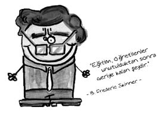

Burrhus F. Skinner (1904-1990)
Amerikalı psikolog. Babası hukukçu, annesi ise şarkıcıydı. Babasını başarılarına rağmen çok parlak görmeyen Skinner annesini “çok güzel” diye tanımlar. Erkek kardeşinin beynindeki anevrizma nedeniyle on altı yaşında ölmesi dışında hayatında çok fazla trajedi olmamıştır.

İngiliz dili ve edebiyatı okumuş, yazar olmak hevesiyle kısa öyküler ve şiirler yazarak yayınevlerine göndermiş, çeşitli gazetelerde yazılar yazmış, fakat sonra bundan vazgeçmiştir. Şiir ya da kurgu alanında iyi bir yazar olamasa da iyi bir psikoloji yazarı olmuştur. Skinner’in davranış teknolojisi adını verdiği yöntemleri vardır. Bu davranışçı teknolojilerin ve teorilerin uygulandığı ütopik bir toplumu anlatan Walden II adıyla bir de roman yazmıştır. Piaget gibi onun da ilk çalışması on yaşında basılmıştır. O Kötümser Arkadaş başlıklı bir şiirdir bu.
Öğrencilik döneminde sıcaklık ve nemi ayarlayan bir bebek beşiği de icat eden Skinner’in fikirlerine dayalı olarak geliştirilen davranışı biçimlendirme yaklaşımı, otistik ve özürlü çocukların eğitiminde de etkili bir şekilde kullanılmaktadır.
Skinner 1990 yılında lösemi nedeniyle hayata veda etmiştir.
Neymiş edimsel koşullanma…
Edimsel koşullanma, ödülü almayı ya da cezadan kurtulmayı sağlayan davranışı öğrenmedir. Edimsel koşullanmanın klasik koşullanmadan en önemli farkı, organizmanın öğrenirken aktif olmasıdır. Yani bir anlamda “Yok öyle üç kuruşa beş köfte!” öğrenmesidir. Pavlov’un klasik koşullanmasında hiçbir şey yapmadan (örneğin köpek hiç çaba sarf etmeden eti alıyordu) ödüle kavuşuluyordu. Oysa edimsel koşullanmada organizma (yani canlı varlık, hayvan ya da insan) ödül almak ya da cezadan kaçmak için bir şey yapmak zorundadır.
İlk edimsel koşullanma deneylerini yapan Skinner’dir. Skinner deneyini şöyle gerçekleştirir:
Aç bırakılan bir fareyi bir kutunun içine koyar. Fare saf saf kutunun içinde gezinirken rastgele kutudaki pedala basar. Pedala basınca, küt diye içeri yiyecek düşer. Fare yiyeceği bir güzel midesine indirir ve dolaşmasına devam eder. Dolaşırken yine rastgele pedala basar, içeri yine yiyecek düşer. Fare sersemler ve kendi kendine sorular sormaya başlar(!) Fakat bu olay devamlı tekrarlanınca kısa zaman sonra fare olayı çakar. “Kesin bu pedalda bir iş var aga!” deyip acıktıkça tekrar pedala basar. Fare bu şekilde acıkınca pedala basması gerektiğini öğrenmiş olur.
Aynı şekilde, taklacı güvercinlere takla atmak, köpeklere atılan sopayı geri getirmek edimsel koşullanma yoluyla öğretilir.